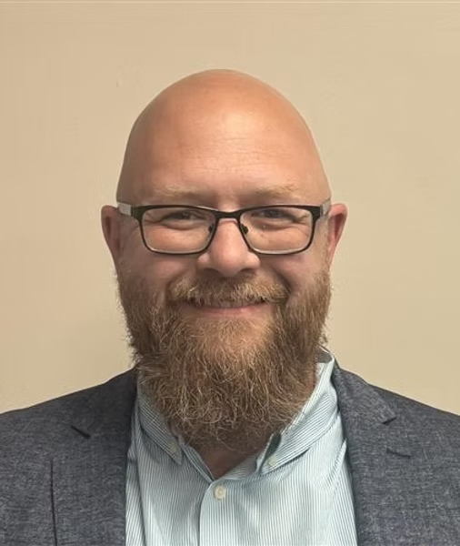

Industry Collaboration
Clara Nexus Risk Intelligence Framework
A field collaboration between Richard Dobson and Matt Wilmot — bringing AI-supported critical control intelligence into safety-critical operations.
Part of Astrala Nexus MVP 2 — deployed 2026.


Matt Wilmot is a Qualified Mine Surveyor and the founder of Wilmot Mining Consultancy Ltd — a practitioner who works at the intersection of technical rigour and operational instinct, where data meets decades of ground truth. With over 25 years in deep mining operations and major project development, he has been shaped by environments where the consequences of getting it wrong are measured not in revenue, but in lives.
His career spans some of the most technically demanding projects in the UK extractive industry — including the Woodsmith polyhalite mine in the North York Moors, one of the largest and most complex new mines ever planned in British history, and the Khemisset potash project in Northern Morocco. In each role, he has held statutory accountability — not advisory accountability — for the safety and integrity of major mining hazards.
Matt's approach is grounded in a principle that shapes everything he does:
“Absence of incidents is not evidence of safety.”
Career journey
Qualifications
- BEng (Hons) 2:1 — Mineral Surveying & Resource Management · Camborne School of Mines, University of Exeter. One of the most respected specialist engineering programmes in the global extractive sector.
- Surveyors Certificate of Qualification No. 0224 · Mining Qualifications Board (HSE) — the statutory qualification required for appointment as a mine surveyor under the UK Mines Regulations 2014. A legal standard, not a professional credential.
- National General Certificate in Occupational Safety & Health · NEBOSH, awarded with Distinction. Underpins Matt's work on major hazard risk management and the BowTie methodology.
- MIMinE — Member of the Midland Institute of Mining Engineers · Professional membership reflecting ongoing contribution to the standards and practice of the UK mining engineering profession.
Clara Nexus Risk Intelligence Framework
What if the structures that keep people safe in the deepest mines could be the same structures that keep intelligence systems — human and artificial — accountable at the surface?
Matt joined the Clara Futura World Global Advisory network as the practitioner anchor of the Clara Nexus Risk Intelligence Framework — the structured, AI-supported approach to critical controls and human accountability at the heart of Astrala Nexus MVP 2. He brings something the platform needed but is rarely found in one person: deep operational credibility in a safety-critical environment, combined with a genuine curiosity about how intelligence systems — human and artificial — actually behave under pressure.
His contribution centres on two interconnected areas. The first is the Clara Nexus Risk Intelligence Framework itself — a structured approach to identifying critical controls, assigning named accountability, and verifying that safety barriers are live and working, shaped by Astrala's combination of AI analysis, AR training, and the lived expertise of the platform's industry and academic advisor network. The second is competence management systems — the deceptively hard problem of how organisations prove, not just claim, that the right people hold the right knowledge at the right time.
As a consultant, Matt engages directly with each client at the start of every engagement to understand their unique operational environment, their specific hazards, and the human systems around them — so that the framework is built around them, not handed to them off the shelf.
Clara Nexus at the centre
At the heart of this collaboration is the Clara Nexus Deeply Human. Deeply AI. framework — a novel pairing of AI analysis and AR training, shaped by Matt's lived operational expertise and the wider Astrala advisor network. The AI layer reads the organisation's signals: shifting critical controls, drift in accountability, competence gaps opening up before they become incidents. The AR layer brings those findings into the hands of the people on the ground — immersive scenarios built around their specific hazards, their barriers, their named responsibilities.
It is a new kind of safety intelligence — one that sees across the whole organisation the way AI can, and teaches individual humans the way only presence and practice can. Not AI replacing judgement. Not AR replacing experience. Both working with the people who carry statutory accountability — in places where getting it wrong is non-recoverable.
Three reference points from a career built on statutory accountability for major mining hazards.
Working with Matt
Engagements are conducted through Wilmot Mining Consultancy Ltd, engaged via Astrala Advisory Cyprus or Clara Futura World as part of Astrala Nexus MVP 2. AI analysis, AR training scenarios, and the full Astrala advisor network are shaped to fit each client's specific hazards, people, and accountability structures.
The world is one family
Interested in this collaboration or exploring a framework engagement?